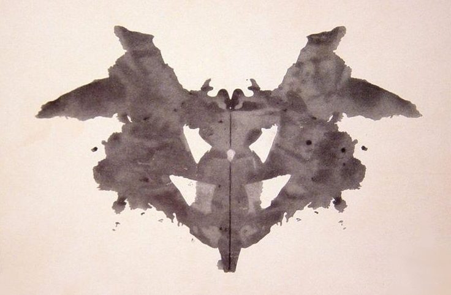
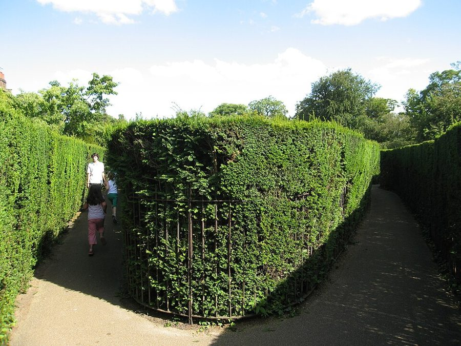
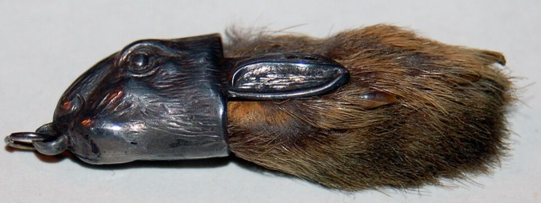

读之前
这一页是报告 1 到 6：3 月 3 日到 8 日，六篇，都写在手术之前。Strauss 让查理把想的、记得的、遇到的事都写下来，于是有了这些满是错字的 progris riport。别被拼法吓住，念出声来多半就懂了。读的时候抓两条线：一条是一连串他看不明白的测验，留意他以为人家要他做什么；一条是他为什么想变聪明，留意他每次说起这个愿望，后面跟着什么话。
查理·戈登（Charlie Gordon），32 岁，下个月过生日。在纽约的唐纳面包店（Donner’s Bakery）打杂，一星期 11 美元，想要的话还能拿些面包和蛋糕。每星期有三次，他用自己的空闲时间去 Beekman 学院给智障成年人开的班上学读写，老师是 Miss Kinnian。她说，那边的实验也许能让他变聪明。他想变聪明。
读的时候带着这几个问题。不用先找答案，读完回来对照「检查一下理解」。
查理每次说「我想我没考过」，他是按什么判断的？在他心里，「测验」是什么？§2 §4
墨迹卡和看图编故事，他各觉得哪里不对劲？他的理由站不站得住？§2 §4
留意他怎么写 Gimpy、Nemur、Miss Kinnian 对他的态度。他写的，和你读出来的一样吗？§3 §5 §6
他说想变聪明，到底想要什么？每次的说法一样吗？§1 §3 §6
分节地图
这一页有六篇报告，报告 4 和报告 5 是同一天（3 月 6 日）写的。全页约 3900 词，一次读完。读完一篇打个勾；每篇后面的英文是开头的几个词（照查理的拼法），在 Kindle 里搜它就能跳过去。没读的那几行先模糊着，免得提前看到情节，点一下就能看清。
报告 1 · 3 月 3 日约 200 词 Dr Strauss says I shoud rite … 只有一段。留意他怎么介绍自己，最后用什么话收尾。 报告 2 · 3 月 4 日约 700 词 I had a test today. I … 一场测验。留意他以为人家要他在卡片上找什么，和他想出的办法。 报告 3 · 3 月 5 日约 500 词 Dr Strauss and prof Nemur say … 留意两位医生问的问题，哪一个他答不上来；还有他怎么说 Gimpy。 报告 4 · 3 月 6 日约 1200 词 I had more crazy tests today … 最长的一篇。留意他为什么不肯编故事，和那个他拼成 amazed 的游戏。 报告 5 · 3 月 6 日约 700 词 They found my sister Norma who … 一场争论。留意那些半截的词是谁说的，他凭什么判断谁站在他这边。 报告 6 · 3 月 8 日约 500 词 Im skared. Lots of pepul who … 留意他手里攥着的东西、来看他的人，和他说的变聪明是为了什么。
背景：书里默认你知道的事
按在书里出现的顺序排，标题前是节号。人名后面括号里是中译本的译名，读者想对照译本时用。
§1 Beekman 学院的成人班查理上课的地方，报告 1 里他拼成 beekmin collidge center for retarted adults，后面又叫它 Beekman School。这是书里虚构的学校：既给智障成年人开读写班，也有心理系的实验室。retarded（智力迟钝）是当时的正式说法，今天在美国被看作冒犯，2010 年的联邦法律（Rosa’s Law）把法律条文里的 mental retardation 改成了 intellectual disability（智力障碍）。本站用今天的说法，引书里的话时照原样。下面几张卡片只写这一页里看得到的。
Dr. Strauss 斯特劳斯医生 让查理写报告的医生，说要「从现在起」把每件事都记下来。
Prof. Nemur 尼姆教授 实验的另一位负责人。查理写成 perfesser Nemur、prof Nemur。
Miss Kinnian 纪尼安小姐 成人班的老师，教查理读写，是她说实验也许能让他变聪明。
Burt Selden 伯特·塞尔登 §2 出场，心理系里给查理做测验的人，穿白大褂。查理一开始只记住了他叫 Burt。
Gimpy 金皮 §3 出场，面包店里烤面包的师傅。gimpy 在美国俚语里是「瘸腿的」，这是个外号。
§1 一星期 11 美元长篇出版于 1966 年。1963 年起，美国联邦最低工资对原先就受保护的行业是每小时 1.25 美元，一星期 40 小时就是 50 美元；当时的联邦最低工资还不覆盖所有行业。查理一星期 11 美元，加上想拿就拿的面包和蛋糕，不到这个数的四分之一。美国 1938 年的《公平劳动标准法》第 14 条从一开始就允许雇主凭证书给残障工人付低于最低工资的钱，这一条后来编为 14(c)，一直有争议。书里没有说唐纳先生的工钱和这条法律有没有关系。
§2 罗夏墨迹测验查理拼成 raw shok。瑞士精神科医生罗夏（Hermann Rorschach）1921 年发表的测验：十张左右对称的墨迹卡片，施测的人一张张问「这可能是什么」，记下你怎么看、看出了什么。卡片上没有藏着一幅「正确答案」的图。卡片的颜色、计分的记号，报告 9 的页面有详细说明，这一页只请你留意：查理以为测验在考他什么。

罗夏测验的第一张卡片。Hermann Rorschach，公有领域，维基共享资源 §4 主题统觉测验（TAT）1935 年哈佛心理诊所的 Christiana Morgan 和 Henry Murray 发表的测验，早期版本 Morgan 署名在前，后来的版本去掉了她的名字。卡片是画着人物的黑白图，画面里发生了什么不说明；施测的人请你就每张图编一个故事：之前发生了什么，现在怎样，人物在想什么、有什么感受，结局如何。全套 31 张（有一张是空白的），通常只挑十张左右。apperception（统觉）是心理学的老术语，指拿自己已有的经验去理解眼前的东西。设计的想法是：人编故事时会把自己的愿望和担心带进去，所以它和罗夏测验都叫投射测验（projective test）。本站没有找到可以用的卡片图，所以不放。
罗夏墨迹测验
主题统觉测验（TAT）
给你看
左右对称的墨迹
画着人物、不说明情节的图
问你
「这可能是什么？」
「编个故事：之前、现在、
结局，人物在想什么」
看什么
你怎么看、看出了什么
故事里的愿望、担心、人际
都没有标准答案：看你往里「投射」了什么
本站示意图：两种投射测验怎么做。卡片的画面是本站画的记号，不是真卡片。 §4 迷宫和老鼠用老鼠走迷宫研究学习，始于 1900 年前后美国 Clark 大学的 Willard Small，他的迷宫是照伦敦 Hampton Court 宫的树篱迷宫改的。此后几十年，「老鼠走迷宫」成了心理学研究学习的标准做法：看它跑几趟才找到出口、走错几次。人也走迷宫：当时有一种让人用手指沿着槽摸着走的迷宫；1930–40 年代还有研究在人走错时给一下轻微电击，看这对学习有什么影响（如 Bernard 和 Gilbert 1941 年的论文）。书里测验室的那一套是小说的设定，下面的示意图照书里的描写画。

伦敦 Hampton Court 宫的树篱迷宫。与本书无关，Small 的老鼠迷宫照它的平面图改。Kris Arnold，CC BY-SA 2.0，维基共享资源
纸上的迷宫
START FINISH
用铅笔画，不能穿过线
Algernon 的迷宫桌
虚线是盖在上面的罩子
隔板可以拆开重拼
查理的木板
电笔沿着刻槽走，不能提起
走进死路会被轻电一下
Burt 把后两种拼成同样的路线
本站示意图：§4 里出现的三种迷宫，按书里的描写画，路线是随手画的。 §5 州立「之家」1960 年代，美国很多智障者住在州立的大型机构里，名字叫 State School、State Home、Training School 之类，很多人一住就是多年。全美州立机构里的智障者 1967 年最多，约 19.5 万人。纽约 Staten Island 上的 Willowbrook 州立学校是最大的一所，1965 年参议员 Robert Kennedy 去看过之后，说那里的情形近乎「蛇窟」（snake pit）。书里的 Warren 州立之家（Warren State Home）是小说里的机构，这一页只提到它的名字。
§6 兔脚、幸运币、马蹄铁美国民间的几样好运物：兔子脚（rabbit’s foot），常做成挂件揣在兜里；马蹄铁（horseshoe），常挂在门上方；还有幸运硬币（lucky penny），俗话说捡到一分钱一整天都走运。反过来，打碎镜子据说要倒霉七年。查理在 §2 就说过兜里揣着兔脚。

维多利亚时代的兔脚挂件，带银饰，旧时认为能带来好运。与本书无关。Sobebunny，CC BY-SA 3.0，维基共享资源 词与短语
三类：紫边的「查理拼的」是他拼错的词，先写还原的拼法；黄边的「每个字都认识」是熟词生义、俚语、别人话里的弦外之音；其余是这里用法特别的词。斜体小字是原句里的几个词，在 Kindle 里搜它就能找到原文，拼错的照拼错的抄。这一页错字太多，只收猜不出来的，和恰好拼成了另一个真词的。读不懂时，先念出声。
§1 报告 1
rite
… says I shoud rite down what …
write 写
同音拼法，rite 本身是个真词（仪式）。这一页里 rite 还当 right 用（§4 put it down rite），只能靠上下文分。
dont no
… I dont no why but …
don’t know 不知道
know 和 no 同音。查理这时一个撇号也不用：dont、cant、its。
perfesser
… dr Strauss and perfesser Nemur I …
professor 教授
照口语的读音拼，pro- 写成了 per-。后面又写成 Prof、prof，大小写随手。
compushishens
… like I rite compushishens in Miss …
compositions 作文
照读音一个音节一个音节地拼。成人班上要写的就是这个。
retarted
… center for retarted adults where I …
retarded （智力）迟钝的
词尾的 d 写成了 t。retarded 是当时的正式说法，今天是冒犯的词，见「背景」。
on my time off
… a week on my time off.
在不上班的时间
time off 是不当班、休息的时间。去上课用的是他自己的空闲。
close for today
… so I will close for today …
今天就写到这里
close 在这里是写信的说法：把信收尾。查理把报告当成写给人看的信，后面还有落款。
yrs truly
… yrs truly Charlie Gordon.
yours truly 谨上（信末落款）
英文信末的客套话，字面是「您忠实的」。yrs 是写信时 yours 的正常缩写，不算拼错；平常 yrs 多指 years，这里不是。译本：「你真成的查理·高登」。原文这里没拼错，译本放了个别字，跟全篇的错字一个调子。
§2 报告 2
say ah
… opin my mouth and say ah.
张嘴说「啊」
医生看喉咙时的口令。查理就凭 Burt 没让他这么做，觉得他不是医生。
rabbit’s foot
… I got my rabits foot in …
兔脚（护身符）
查理拼成 rabits，没有撇号。见「背景」§6。
be through
… Charlie we are not thru yet.
（事情）做完了
thru 是 through 的非正式写法，不算拼错。be through 是「完事了」，这里是「还没完」。
raw shok
… explaned me it was a raw shok …
Rorschach 罗夏（测验）
照读音拼成两截，前半截是真词 raw，连起来念像 raw shock（生生的电击、惊吓）。原书这几个词是斜体，这一页里他都这样叫这个测验。译本：「罗夏测烟」。人名译对了，别字挪到了「验」上；raw shock 这层谐音中文保不住。
§3 3 月 5 日
bestist
… I was her bestist pupil in …
best 最好的
不是拼错字母，是在最高级 best 后面又加了一次 -est，孩子说话常这样。后面的 hardist 是 hardest。
holler
… Gimpy hollered at me because I …
大声嚷，吼
美国口语。留意查理紧接着怎么解释 Gimpy 老冲他吼。
Boy
… Boy if I get smart wont …
嘿，哇（感叹）
句首的 Boy 是口语感叹词，不是「男孩」。这一页他用了好几次，§4、§6 都有。
§4 3 月 6 日
progis riport
… down rite in my progis riport.
progress report 进步报告
每篇的标题里他写的是 progris riport，这里又少了一个 r。同一个词前后拼法不一，这一页常见。
THEMATIC APPERCEPTON TEST
… my progis riport. THEMATIC APPERCEPTON TEST.
Thematic Apperception Test 主题统觉测验
他特地问了怎么拼，全大写抄下来，还是漏了一个 I。见「背景」。
make believe
… She said make beleeve but I …
假装，就当是真的
查理拼成 beleeve。孩子「过家家」也叫 make-believe。她的意思是「你就编吧」，查理的回答是 thats lies。
janiter
… job to be janiter at Donners …
janitor 勤杂工
打扫、看门、干杂活的人。这是查理在面包店的差事。
persinality
… was for getting persinality. I laffd.
personality 性格，人格
她说的 getting 是「测出、摸清」。查理笑的是：洒了墨水的卡片和陌生人的照片，怎么能「得到」那种东西。
drawer
… I dont drawer so good.
draw 画（画）
在不卷舌的纽约口音里，draw 和 drawer 读起来几乎一样，查理照音拼，恰好拼成了真词 drawer（抽屉）。Kindle 长按只会查到「抽屉」。
spearamints
… where they make spearamints. I thot …
experiments 实验
他把 experiments 听成了 spearmint（留兰香，口香糖常用的薄荷味），所以下一句说以为那是做 chooing gum（chewing gum，口香糖）的地方。
amazed
… tolld me that game was amazed and …
a maze 迷宫
Burt 说的是 a maze，查理听成了一个词 amazed（吃惊的），后面还拿 amaze 当名词用（a differnt kind of amaze）。译本：「迷工」。别字落在宫字上，a maze 和 amazed 的谐音没有了。
Well do you know
… Well do you know he put …
你猜怎么着
讲故事时吊人胃口的口头语，不是真在问「你知道吗」。
clock
… Burt took out his clock and …
（计时用的）秒表
计时用的是秒表（stopwatch），查理管它叫 clock。后面 Burt 想把它藏起来，别让查理看见。
§5 报告 5
motor-vation
… I had a good motor-vation. I …
motivation 动机，干劲
照读音拆开，前半截成了 motor（马达）。查理不知道它是什么，只知道 Algernon 也有。译本：「动鸡」，后面的 eye-Q 作「哀Q」。都用同音别字，和原文是一个路数。
eye-Q
… everbody with an eye-Q of 68 …
I.Q. 智商
照字母 I 的读音拼成了 eye（眼睛）。68 在人群里是什么位置，报告 9 的页面「背景」里有一张分布图。
new breed
… frist of your new breed of …
新品种
breed 多用于培育的动植物品种。这是 Strauss 对 Nemur 说的话，拿它来说人。
intelek
… breed of intelek** coudnt get the …
intellectual 智力（超群）的
查理只记下了前半截，跟着写「没听清那个词」，再后面是 superman（超人）。Strauss 说的大概是 new breed of intellectual superman。原书在这一段的半截词后面都印了两个星号（intelek**、host** 这样），提醒这是没记全的词。
host and uncoop
… low ment** are host** and uncoop** …
hostile and uncooperative 有敌意、不合作
都只记了前半截。前面的 low ment 大概是 low mentality（智力低下）。这是 Strauss 在说智力低的人通常怎样。
apathet
… usally dull and apathet** and hard …
apathetic 冷漠，提不起劲
同一句里的半截词。dull 在这里是「迟钝」。
natcher
… Charlie has a good natcher and …
nature 天性，脾气
照读音拼。good nature 是「好脾气、性情温和」。
tremen achev
… mentel age. A tremen** achev**
tremendous achievement 了不起的成就
两个词都只记了一半，这一段就断在这里，没有句号。译本：「这是具大的成就」。补成了完整的一句，原文那种没记完的断口没有了。
sucseed temperary
… mite even sucseed temperary and leeve …
succeed temporarily 暂时成功
Nemur 说的几种可能之一。下半句 leave you worse off than you are now 是「让你比现在更糟」。
break a mirror
… I never breakd a mirrir in …
打碎镜子
美国民间说打碎镜子要倒霉七年。查理拿这个证明自己运气好，又补一句摔过盘子，但那不算。
contribyushun
… making a grate contribyushun to sience.
great contribution to science 对科学的重大贡献
一句里三个词都照读音拼。grate 本身是个真词（擦菜板、炉箅子）。
try awful hard
… Im gonna try awful hard.
拼命努力
awful 在口语里当副词用，只是「非常」，没有「可怕」的意思。
§6 报告 6
superstishus
… dont be so superstishus Charlie.
superstitious 迷信的
照读音拼。Strauss 接着说 This is sience，查理把 science 也拼成了 sience。
beet
… if I coud beet Algernon in …
beat 赢，打败
同音拼法，beet 是甜菜。
go down in the books
… my name will go down in …
载入史册
套的是 go down in history、go down in the record books（被记进历史、纪录）。这是查理转述 Nemur 的意思，不是真说名字会印进书里。
growch
… That Prof Nemur is a growch.
grouch 爱发牢骚、脾气坏的人
理由就在上一句：手术前不许吃东西，Nemur 拿走了他的巧克力蛋糕。译本：「斯特劳斯医生代走我的巧克力旦高」。原文拿走蛋糕的是 Nemur，下一句骂的也是 Nemur，译本这里把人换成了 Strauss。
查理的文字
这一页是曲线的起点。六篇报告里拼错的词都在一成二到一成九之间，大约每六七个词错一个；最少的是报告 4（12.4%），最多的是报告 6（19.1%），也就是开头写着 Im skared 的那一篇。切到「标点」：几乎是零，全页只有两个逗号（§3、§6 各一个）。问句也用句号收（Do you understand what that meens.），别人的话不加引号，直接接在 He sed 后面。
错法有规律：照读音拼（sience、eye-Q），同音词混用（rite、no、beet），词中间加连字符（re-membir、fer-got、Beek-man），同一个词前后拼法不一（progris 和 progis，chokilat 和 choklate）。报告 5 里那几行半截词（host、uncoop、tremen achev）是他边听边当场抄下的原话：别的地方别人说什么，都是经他转述的，只有这几行没经过他的嘴。
读过 1959 年中篇的，可以对照一下：中篇里查理 37 岁，第一篇写在 3 月 5 日，报告 2 里测验的人没有名字，主题统觉测验的名字拼对了。Uncle Herman、Norma、Warren 州立之家、面包店送来的巧克力蛋糕、报告 1 末尾的 yrs truly，都是长篇加的。
记忆拼图
查理的童年是一段一段想起来的。每段一张卡片：想起了什么，是被眼前的什么勾起来的。年纪是从书里推的，推不出来的写「年纪不详」。读过的页的卡片会汇总到记忆拼图 ，按年纪排好。
考试和打翻的墨水 小时候在学校，每次考试都不及格，也常把墨水打翻。是 Burt 拿出洒满墨水的卡片、他怕考砸的时候想起来的。
§2 妈妈叫他好好学 他一辈子都想变聪明，不想笨。妈妈总叫他努力去学，就像 Miss Kinnian 现在叫他的那样。是 Nemur 问他当初为什么想学读写时说的。
§3 很久没见的家人 照顾过他的 Uncle Herman 已经死了。父母和妹妹 Norma，他很久很久没见，想不起多少，只记得他们以前大概住在布鲁克林，猜他们也许也死了。是医生说手术要家人许可时说起的。
§3 撒谎就挨打 小时候他撒过谎，每次都挨打，所以现在不撒谎了。是做测验的女士要他给图里的人编故事时想起来的。
§4 钱包里的合照 钱包里有一张照片：他、Norma 和 Uncle Herman。他和 Uncle Herman 一起住过很久，面包店的差事是 Uncle Herman 去世前替他找的。他想讲照片上的人，那位女士不要听。
§4 值得停下来的句子
I dont no what sience is but they all keep saying it so mabye its something that helps you have good luk.— §6，报告 6，Strauss 叫他别迷信之后。本站译：我不知道科学是什么，可他们老这么说，那它也许是一样能帮人走好运的东西。
Strauss 说「别这么迷信，这是科学」，本意是把科学和运气分开；查理却把科学放进了兔脚、幸运币、马蹄铁那一排。他的推理并不糊涂：大家在要紧关头反复提一样东西，那大概就是能保佑人的。这句话量出了他和身边人的距离：在 Strauss 那里，科学恰恰是不靠运气的东西。说完这句，他还是一手攥兔脚，一手攥幸运币。
I just want to be smart like other pepul so I can have lots of frends who like me.— §6，报告 6。本站译：我只想跟别人一样聪明，这样我就能有很多喜欢我的朋友。
这一页他说了好几次想变聪明，理由一次比一次具体：§1 是 Miss Kinnian 说也许能行，§3 是妈妈从小的叮嘱，§6 先说要让找到的家人吃一惊，最后落在这一句。Nemur 说他会出名、名字会载入史册，他说不怎么在乎出名。在他心里，聪明是通往朋友的路。可在 §3 里，他已经说过 Gimpy 是他的朋友、「真的喜欢我」。
读完想一想
1. Nemur 跟查理讲了风险：可能什么都不会发生，也可能暂时成功、最后让他更糟，那样就得送他去 Warren 州立之家。查理说他不在乎，他什么都不怕，还有兔脚。他这算「同意」了吗？签字同意的，是他多年没见的妹妹，你怎么看？
本站的看法 讲风险这一步书里有，Nemur 还问了一句「你明白这是什么意思吗」。可查理拿运气回答风险，说明他没听进去，也许是听不进去。这不全是智力的问题：一个人越想要一样东西，越难听进坏消息。由家人代为同意，当时和今天都有，见「对照今天」。可 Norma 多年没见过查理，她替他掂量的是什么，这一页没有写，留着这个问题往下读。
2. 做测验的女士让他编故事，他说那是撒谎。他是没懂这个测验，还是看出了它的一个真问题？
本站的看法 两样都有。他没懂「编」在这里不是骗人：讲的人和听的人都知道那是编的。可他问的那句「墨水卡和陌生人的照片怎么能看出性格」，心理学家自己也争了几十年。还有一层：一个因为撒谎挨过打的人，对「假装」格外警惕，他拒绝的样子，本身就说了不少关于他的事。
3. 查理说变聪明是为了有很多喜欢他的朋友。聪明和被人喜欢，有关系吗？
本站的看法 在他的经验里，考试不及格、撒谎挨打，都和「不聪明」连在一起，他从小想的就是「聪明，不要笨」，所以他把聪明当成被人接纳的条件。可他同时相信自己已经有朋友，Gimpy 吼他也是因为喜欢他。这两样他自己没察觉有矛盾。这个愿望值得记住，读下去时回头对照。
对照今天
成立 后来的事实印证了这个说法部分成立 一部分对，一部分被后来的事改了被改写 后来的事实推翻了它，或者完全变了样书里的说法：要用查理做实验，得先取得他家人的许可（Strauss 和 Nemur 对查理说的，§3）
书里 查理自己想做，可他们说要家人许可。找到了和母亲住在布鲁克林的妹妹 Norma，她同意了。Nemur 也向查理讲了可能的坏结果。
当时 1947 年的纽伦堡守则把受试者本人的自愿同意放在第一条，并要求他有给出同意的法律能力。1964 年世界医学会的《赫尔辛基宣言》写明：受试者没有法律行为能力时，要取得法定监护人的同意。
今天 由家人或代理人代为同意仍是一种办法，但远不止这一步。美国的联邦法规（45 CFR 46）要求研究先过伦理审查委员会（IRB），代为同意的人必须是法律认可的「合法授权代表」。有智力障碍不等于没有同意能力，要一个人一个人地评估；本人不能完全同意时，还要征求他自己的赞同（assent），他不愿意，原则上要尊重。核对于 2026-10。依据：纽伦堡守则（1947），世界医学会《赫尔辛基宣言》1964 年版，美国联邦法规 45 CFR 46，美国国立卫生研究院（NIH）的伦理审查指南。
书里的说法：墨迹卡和看图编故事能测出人的性格（做测验的女士，§4）
书里 她说这两个测验是 for getting persinality。查理笑了：洒了墨水的卡片和陌生人的照片，怎么能看出那个东西。
当时 罗夏测验和主题统觉测验在美国临床心理学里用得很广，常用来评估病人的人格。
今天 查理的怀疑有一部分说中了。2000 年 Lilienfeld、Wood、Garb 的综述发现，这两个测验的大多数计分指标没有实证支持，只有少数有。2013 年 Mihura 等人的元分析认为罗夏测验相当一部分指标有效；批评者 2015 年回应，承认其中和认知能力、思维混乱有关的几类分数确实有效，对其余的仍有争论。两个测验今天都还在用，争议没有结束。核对于 2026-10。依据：Lilienfeld、Wood、Garb 在 Psychological Science in the Public Interest 的综述（2000），Mihura 等人在 Psychological Bulletin 的元分析（2013），Wood 等人的评论（2015）。
检查一下理解
先在心里答，再点开。答错的那题，回书里把对应那一条再读一遍。
1.（§2）Burt 拿着墨迹卡想让查理做什么？查理以为要他做什么？ Burt 要他说墨迹让他想到什么、像什么。查理以为墨水里藏着现成的图，自己找不到，于是把卡片拿近又拿远，还戴上了眼镜。
2.（§3）Strauss 问他是怎么找到 Beekman 的成人班的，他怎么答？问到家人呢？ 他说不记得了。家人：照顾过他的 Uncle Herman 已经死了，父母和妹妹 Norma 很久很久没见，他想他们以前住在布鲁克林，也许也死了。
3.（§4）查理为什么不肯给图里的人编故事？ 他觉得编故事就是撒谎，小时候撒谎总挨打。他提出讲钱包照片上 Uncle Herman 和 Norma 的事，那位女士不要听。
4.（§4）amazed 和 spearamints 原本是什么词？ a maze（迷宫）和 experiments（实验）。后一个他听成了口香糖的 spearmint，所以以为心理实验室是做口香糖的地方，后来才觉得是玩拼图和游戏的地方。
5.（§5）Nemur 说实验可能有哪几种结果？最坏的情况怎么办？ 可能失败，什么也不会发生；也可能暂时成功，最后让他比现在更糟。真到那一步，就得送他去 Warren 州立之家住。
6.（§6）面包店的人以为查理为什么住院？ 以为他病了。是 Nemur 让他这样说的：要变聪明的手术先保密，免得没成功或出了差错。
用一句话说这一页：
精彩回顾
隔几周回来，先看这几张卡片。想不起来的那张，点节号回到这一页，再回书里那一条。
一句话： 手术前的查理弄不明白一个个测验要他干什么，却一心想变聪明，好有很多喜欢他的朋友。
raw shok 和眼镜 Burt 让他说墨迹像什么，他以为卡片里藏着图。看不见，就说戴上眼镜也许行；戴上了，还是只有墨水。最后他说：一瓶墨水洒在白卡片上。
§2 编故事就是撒谎 看图编故事，他不肯：小时候撒谎总挨打。他想讲钱包照片上的 Uncle Herman 和 Norma，那位女士不要听。她说测的是性格，他笑出了声。
§4 amazed Burt 说的 a maze 他听成了 amazed。他用电笔和白老鼠 Algernon 比走迷宫，一回接一回，次次都输。他不难过：看着 Algernon，他学会了怎么走完。
§4 tremen achev Nemur 和 Strauss 争论用不用他，他听不懂，就把词抄进笔记本，只抄了半截。他从口气里判断 Strauss 和 Burt 站在他这边。Strauss 说他有 motor-vation。
§5 兔脚和幸运币 Strauss 叫他别迷信，这是科学。他想科学大概也是能带来好运的东西，一手攥兔脚，一手攥带孔的幸运币，马蹄铁太重，留在夹克里。
§6 That Prof Nemur is a growch 面包店托 Joe Carp 送来巧克力蛋糕，大家以为他病了。手术前不能吃东西，Nemur 把蛋糕拿走，查理在报告末尾骂了他一句。
§6